Section 11 Le package Ggplot en pratiques
Reprenons la base de données sur les aides financières versées aux entreprises pendant la crise du Covid enregistrée précédemment (mais on peut aussi la télécharger de nouveau via l’API pour avoir la version la plus récente si elle est actualisée), et regardons de nouveau les variables présentes dans cette base (les 2 dernières variables étant des variables créées précédemment, cf. section 3.2.3. de la séance 1 de ce cours) :
dt_aidesCovid <- readRDS("data/dt_aidesCovid.RData")
dt_aidesCovid %>% glimpse()Rows: 1,680
Columns: 15
$ reg_code <int> 84, 84, 84, 84, 84, 84, 27, 27, 27, 53, 53, 24~
$ geo_point_2d <list> <45.263906, 5.573978>, <45.728000, 4.164813>,~
$ naf_section_name <chr> "Arts, spectacles et activités récréatives", "~
$ nombre_entreprises <int> 1980, 3034, 2188, 6577, 3350, 6772, 61, 45, 23~
$ plan <chr> "Fonds de solidarité", "Fonds de solidarité", ~
$ financial_support_count <int> 15958, 8936, 21447, 19967, 18693, 16910, 366, ~
$ reg_name <chr> "Auvergne-Rhône-Alpes", "Auvergne-Rhône-Alpes"~
$ naf_section_code <chr> "R", "F", "I", "F", "N", "Q", "J", "K", "L", "~
$ total_meuros <dbl> 53.696626, 13.922570, 111.923817, 33.039981, 8~
$ dep_name <chr> "Isère", "Loire", "Loire", "Rhône", "Rhône", "~
$ iso3_code <chr> "FXX", "FXX", "FXX", "FXX", "FXX", "FXX", "FXX~
$ dep_code <chr> "38", "42", "42", "69", "69", "69", "58", "89"~
$ total <dbl> 53696626, 13922570, 111923817, 33039981, 83094~
$ total_meuros_outliers <chr> "Vrai", "Faux", "Vrai", "Faux", "Vrai", "Faux"~
$ total_meuros_cat <fct> "(21.1,1.64e+03]", "(1.83,21.1]", "(21.1,1.64e~Passons en variables ‘factor’ les variables caractères, car sinon au moment de la construction des graphiques avec ggplot2 la fonction ne reconnaîtra pas les modalités de la variable qualitative utilisée (sauf à appliquer la fonction factor() à la variable directement dans l’aes de ggplot()).
dt_aidesCovid <- dt_aidesCovid %>% mutate_if(is.character, as.factor)
#dt_aidesCovid %>% select_if(is.factor) %>% sapply(levels)11.1 Exemple de la construction d’un graphique pas à pas
On va chercher à représenter la distribution du montant en millions d’euros des aides financières versées aux entreprises selon les régions. Notre variable principale est donc total_meuros et la variable “secondaire” ou fonction de la première est reg_name ou reg_code.
Pour représenter la distribution d’une variable quantitative ou continue, on peut utiliser un histogramme (ou/et une courbe de densité), mais comme ici on veut la représenter selon une autre variable peut-être serait-il mieux d’utiliser une boîte à moustache qui donnera les principaux éléments de description de la distribution de cette variable.
ATTENTION néanmoins, vu la façon dont la base de données est construite, que l’on montre par ce graphique ce n’est pas la distribution de la variable selon ce qu’a reçue chaque entreprise dans la région, mais selon ce qu’a reçu chaque département et chaque secteur d’activité dans la région ; les données ne sont en effet pas individuelles mais agrégées par département et secteur, la distribution affichée sera donc sensible au nombre (inégal) de départements dans chaque région. Nous raisonnerons ensuite de manière plus pertinente sur des indicateurs construits.
Essayons !
D’abord, en créant une boîte à moustache pour représenter la distribution de la variable total_meuros:
dt_aidesCovid %>% ggplot() + aes(x = total_meuros) + geom_boxplot()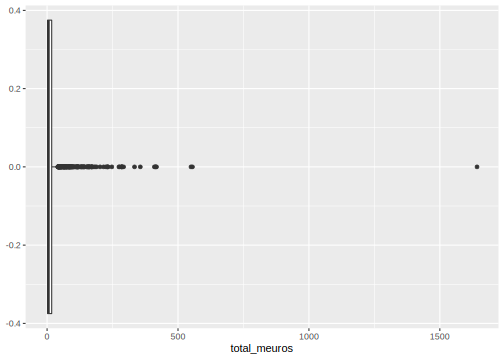
Comme il y a des valeurs aberrantes (cf. section 3.2.3. de la séance 1 de ce cours), il faut utiliser une option pour mettre une échelle moins grande en abcisses. Plusieurs manières de faire existent, mais l’une d’entre elles équivaut à supprimer les valeurs, alors qu’une autre permet de les garder et juste de ne pas les faire apparaître sur le graphique, cela peut-être important si ensuite nous voulons ajoutons des statistiques comme la moyenne sur le boxplot.
Pour changer l’échelle des abcisses, on utilise scale_x_continuous() et l’option limits=c() pour indiquer les nouvelles valeurs de l’échelle, par exemple ici entre 0 et 100 (pour rappel, on est en millions d’euros) :
dt_aidesCovid %>% ggplot() + aes(x = total_meuros) + geom_boxplot() +
scale_x_continuous(limits=c(0,100))Warning: Removed 70 rows containing non-finite values (stat_boxplot).
Un avertissement est donné : 70 lignes ont donc été supprimées (sur 1 680 initiales), si nous ajoutons ensuite la moyenne, elle sera calculée sans ces 70 observations, cela ne changera peut-être pas significativement ici cette moyenne mais cela n’est pas très rigoureux.
Utilisons la seconde méthode maintenant, avec l’option xlim() à intégrer dans la fonction coord_cartesian() qui fait l’équivalent d’un zoom sur le graphique :
dt_aidesCovid %>% ggplot() + aes(x = total_meuros) + geom_boxplot() +
coord_cartesian(xlim=c(0,100))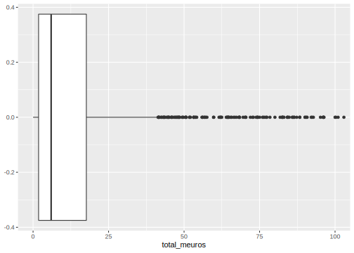 Plus de “warning” !
Ensuite, nous souhaitons représenter la distribution de cette variable selon les régions : nous allons pour cela ajouter dans l’aes() une variable y= ; et nous allons en profiter pour préciser un peu l’échelle des abscisses (réduire le “pas” avec l’option breaks=seq()) :
dt_aidesCovid %>% ggplot() + aes(x = total_meuros, y=reg_name) + geom_boxplot() +
coord_cartesian(xlim=c(0,100)) +
scale_x_continuous(breaks=seq(0,100,10))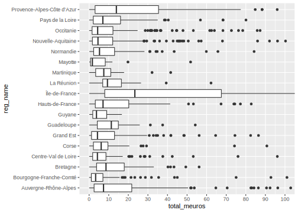 On voit que pour la région Île-de-France, le maximum n’est pas visible sur l’axe, il faut augmenter un peu l’échelle dans ce cas.
Nous pouvons également ajouter la moyenne, puisqu’ici nous voyons de gauche à droite, le minimum, le 1er quartile, la médiane, le 3ème quartile, le maximum et les “outliers” (points aberrants selon les statistiques de la boxplot). Pour cela, il faut utiliser la “couche” statistiques de ggplot() avec la fonction stat_summary() et les options fun = mean pour la moyenne, geom = point pour qu’elle soit représentée par un point, color="gray50" pour qu’elle se différencie des autres points et soit en gris, et éventuellement size=2 pour jouer sur la taille du point :
# Pour infos, les options de `geom =` dans `stat_summary()` sont par exemple :
# "point", "pointrange", "crossbar", "bar" (cell-ci à ne pas utiliser ici néanmoins !)
dt_aidesCovid %>% ggplot() + aes(x = total_meuros, y=reg_name) +
geom_boxplot() +
stat_summary(fun=mean, geom="point", color="gray50", size=2) +
coord_cartesian(xlim=c(0,160)) +
scale_x_continuous(breaks=seq(0,160,10))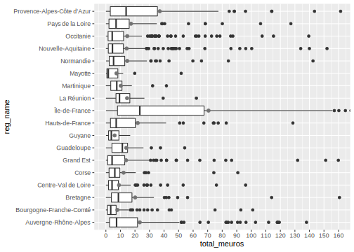
On peut aussi vouloir enlever les outliers avec l’option outlier.shape de geom_boxplot() comme ceci : geom_boxplot(outlier.shape = NA).
On peut vouloir encore ordonner l’affichage des régions par ordre décroissant de la médiane ou de la moyenne (ordre décroissant ici = valeur la plus élevée en haut du graphique). Nous pouvons, entre autres, utiliser pour cela la fonction fct_reorder() du package forcats déjà présenté dans la section 3.2 de ce cours (Séance 1) : nous pouvons alors directement l’intégrer dans l’aes de ggplot dans la variable en ordonnée y=fct_reorder(), il faut alors entre parenthèses mettre la variable utilisée en ordonnée, suivie de la variable par laquelle on ordonne (la même que celle utilisée dans x=). Utilisée dans un boxplot, cela ordonne par défaut selon la médiane ; si on veut que les régions soient ordonnées par la moyenne, il faut rajouter l’option .fun=mean dans la fonction fct_reorder().
dt_aidesCovid %>% ggplot() +
aes(x = total_meuros, y=fct_reorder(reg_name, total_meuros)) +
geom_boxplot() +
stat_summary(fun=mean, geom="point", color="gray50", size=2) +
coord_cartesian(xlim=c(0,160)) +
scale_x_continuous(breaks=seq(0,160,10))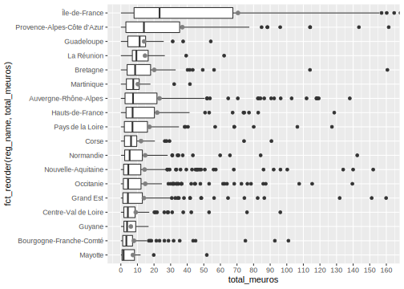
Ordonnée par la moyenne, cela donnerait ceci :
dt_aidesCovid %>% ggplot() +
aes(x = total_meuros, y=fct_reorder(reg_name, total_meuros, .fun=mean)) +
geom_boxplot() +
stat_summary(fun=mean, geom="point", color="gray50", size=2) +
coord_cartesian(xlim=c(0,160)) +
scale_x_continuous(breaks=seq(0,160,10))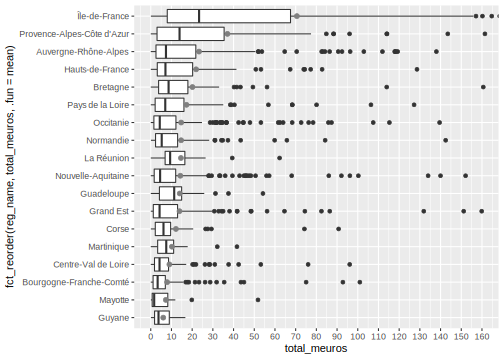
Nous arrivons à un graphique intéressant, il faut maintenant améliorer la description autour : noms des axes, titres, légende informative sous le graphique (avec notamment avertissement sur les valeurs non affichées sur le graphique), éventuellement un peu de couleur (avec fill= dans l’aes() pour que les couleurs soient différentes selon les régions mais en supprimant la légende affichée automatiquement qui n’apporte pourtant pas d’information ici, puisque les noms des régions sont affichées sur l’axe des y), etc.
Cela se fait avec la fonction labs(), et ensuite la fonction theme().
Une petite astuce pour les titres pour qu’ils ne soient pas coupés sur le graphe : \n collé à un mot (sans espace) permet de mettre à la ligne à partir de ce mot !
dt_aidesCovid %>% ggplot() +
aes(x = total_meuros, y=fct_reorder(reg_name, total_meuros, .fun=mean),
fill=reg_name) +
geom_boxplot() +
stat_summary(fun=mean, geom="point", color="gray50", size=2) +
coord_cartesian(xlim=c(0,160)) +
scale_x_continuous(breaks=seq(0,160,10)) +
labs(title="Distribution du montant total des aides financières versées aux \nentreprises par le fonds de solidarité pendant la crise du Covid19, \npar région",
x="Montant total des aides (en millions d'euros)", y="Région",
caption="Remarques : Les valeurs au-delà de 160 millions d'euros ne sont pas affichées ; les points en \ngris représentent la moyenne pour chaque région. \nSource : Base 'aides-entreprises-covid-19-france' téléchargée sur 'public.opendatasoft.com' \nvia l'API. \nCalculs : Camille Signoretto.") +
theme(legend.position="none",
plot.caption = element_text(hjust=0),
plot.title = element_text(size=12),
axis.title.x = element_text(size=10),
axis.title.y = element_text(size=10))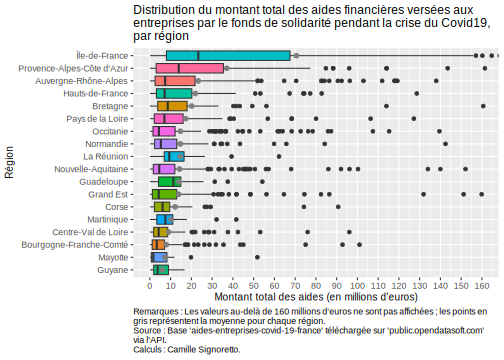
Allons plus loin et testons d’autres types de graphiques.
Peut-être, peut-on utiliser un graphe en violon à la place du boxplot ?
dt_aidesCovid %>% ggplot() +
aes(x = total_meuros, y=fct_reorder(reg_name, desc(total_meuros), .fun=mean),
fill=reg_name) +
geom_violin() +
stat_summary(fun=mean, geom="point", color="gray50", size=2) +
coord_flip(xlim=c(0,75)) +
labs(title="Distribution du montant total des aides financières versées aux entreprises par le fonds \nde solidarité pendant la crise du Covid19, par région",
x="Montant total des aides (en millions d'euros)", y="Région",
caption="Remarques : Les valeurs au-delà de 75 millions d'euros ne sont pas affichées ; les points en gris représentent la moyenne \npour chaque région. \nSource : Base 'aides-entreprises-covid-19-france' téléchargée sur 'public.opendatasoft.com' via l'API. \nCalculs : Camille Signoretto.") +
theme(legend.position="none",
plot.caption = element_text(hjust=0),
axis.text.x = element_text(angle=90),
plot.title = element_text(size=12),
axis.title.x = element_text(size=10),
axis.title.y = element_text(size=10))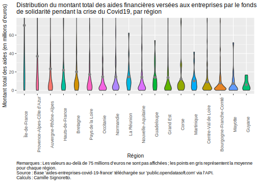
Non, le rendu n’est pas terrible car les distributions pour certaines régions sont très étirées, à éviter donc ici !
Mais peut-être peut-on rajouter les observations pour voir complètement la distribution avec geom_jitter() appelé après geom_boxplot() et en enlevant les “outliers” dans ce cas ?
dt_aidesCovid %>% ggplot() +
aes(x = total_meuros, y=fct_reorder(reg_name, total_meuros, .fun=mean), fill=reg_name) +
geom_boxplot(outlier.shape = NA) +
geom_jitter(alpha = 0.2, size = 2, width = 0.1, height = 0) +
stat_summary(fun=mean, geom="point", color="gray50", size=2) +
coord_cartesian(xlim=c(0,160)) +
labs(title="Distribution du montant total des aides financières versées aux \nentreprises par le fonds de solidarité pendant la crise du Covid19, \npar région",
x="Montant total des aides (en millions d'euros)", y="Région",
caption="Remarques : Les valeurs au-delà de 160 millions d'euros ne sont pas affichées ; les points en \ngris représentent la moyenne pour chaque région. \nSource : Base 'aides-entreprises-covid-19-france' téléchargée sur 'public.opendatasoft.com' \nvia l'API. \nCalculs : Camille Signoretto.") +
theme(legend.position="none",
plot.caption = element_text(hjust=0),
plot.title = element_text(size=12),
axis.title.x = element_text(size=10),
axis.title.y = element_text(size=10))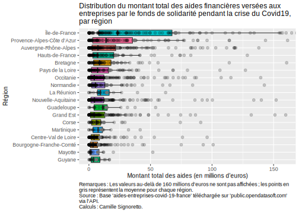
Non, pas terrible non plus, on ne voit plus grand chose !!
Finalement, on peut garder le graphique que l’on avait en enlevant les “outliers” pour le rendre plus clair :
dt_aidesCovid %>% ggplot() +
aes(x = total_meuros, y=fct_reorder(reg_name, total_meuros, .fun=mean), fill=reg_name) +
geom_boxplot(outlier.shape = NA) +
stat_summary(fun=mean, geom="point", color="gray50", size=2) +
coord_cartesian(xlim=c(0,160)) +
labs(title="Distribution du montant total des aides financières versées aux \nentreprises par le fonds de solidarité pendant la crise du Covid19, \npar région",
x="Montant total des aides (en millions d'euros)", y="Région",
caption="Remarques : Les valeurs au-delà de 160 millions d'euros ne sont pas affichées ; les points en \ngris représentent la moyenne pour chaque région. \nSource : Base 'aides-entreprises-covid-19-france' téléchargée sur 'public.opendatasoft.com' \nvia l'API. \nCalculs : Camille Signoretto.") +
theme(legend.position="none",
plot.caption = element_text(hjust=0),
plot.title = element_text(size=12),
axis.title.x = element_text(size=10),
axis.title.y = element_text(size=10))
Voilà un premier graphique construit avec la grammaire de ggplot().
À vous maintenant de construire vous-mêmes les graphiques qui vous sont suggérés dans la section suivante !
11.2 D’autres exemples à travers des exercices
11.2.1 Distribution du montant total des aides financières, par secteur d’activité
Construisez le même type de graphique mais cette fois par secteur d’activité et non par région. N’hésitez pas à changer les options pour le mettre à votre goût !!
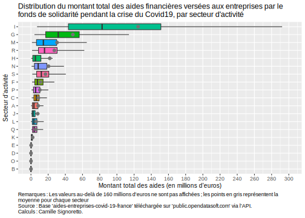dt_aidesCovid %>% ggplot() +
aes(x = total_meuros,
y=fct_reorder(naf_section_code, total_meuros, .fun=mean),
fill=naf_section_code) +
geom_boxplot(outlier.shape = NA) +
stat_summary(fun=mean, geom="point", color="gray45", size=2.2) +
coord_cartesian(xlim=c(0,300)) +
scale_x_continuous(breaks = seq(0,300,20)) +
labs(title="Distribution du montant total des aides financières versées aux entreprises par le \nfonds de solidarité pendant la crise du Covid19, par secteur d'activité",
x="Montant total des aides (en millions d'euros)", y="Secteur d'activité",
caption="Remarques : Les valeurs au-delà de 160 millions d'euros ne sont pas affichées ; les points en gris représentent la \nmoyenne pour chaque secteur \nSource : Base 'aides-entreprises-covid-19-france' téléchargée sur 'public.opendatasoft.com' via l'API. \nCalculs : Camille Signoretto.") +
theme(legend.position="none",
plot.caption = element_text(hjust=0),
plot.title = element_text(size=12.5),
axis.title.x = element_text(size=10),
axis.title.y = element_text(size=10))11.2.2 Comparaison des montants moyen et médian des aides financières, par région
Nous entamons maintenant des graphiques qui auront un sens plus pertinent par rapport à la base mobilisée (et à la façon dont elle est construite), le résultat pourra ainsi être interprété.
Construisez d’abord un graphique mettant côte à côte deux graphes en bâtons représentant respectivement le montant moyen et le montant médian des aides financières versées aux entreprises par le fonds de solidarité pendant la crise du Covid19 par région.
Pour vous aider si besoin, réfléchissez par étapes :
- créer un premier graphe que vous assignerez à un nouvel objet et qui représentera la moyenne par région ;
- vous pouvez pour cela créer une nouvelle variable qui constituera la moyenne pour chaque région (un conseil : arrondir à l’unité) ;
- sélectionner les variables qui seront utilisées dans le graphique et vérifier (ou corriger sinon) qu’il n’y ait pas des doublons (lignes identiques) car cela peut fausser le graphique ensuite ;
- construisez le graphique avec
ggplot()et la bonne fonctiongeom_***(), les données seront affichées par ordre décroissant ; - faîtes de même pour la médiane par région ;
- vous pouvez ensuite mettre ces graphiques côte à côté avec le package
patchwork(qu’il vous faudra probablement installer si c’est la première fois que vous l’utilisez), recherchez comment faire ensuite (c’est très simple !), puis ajouter un titre et une légende général avec la fonctionplot_annotation().
p1 <- dt_aidesCovid %>% group_by(reg_name) %>%
mutate(moy_total_meuros = round(mean(total_meuros),0)) %>%
select(moy_total_meuros, reg_name) %>%
unique() %>%
ggplot() + aes(x = fct_reorder(reg_name, desc(moy_total_meuros)),
y = moy_total_meuros) +
geom_bar(stat="identity") +
geom_text(aes(label = moy_total_meuros), position = position_stack(vjust = 0.5),
color="gray95", size=2.8) +
labs(title = "Moyenne", x = " ", y = " ") +
theme(axis.text.x = element_text(angle=60, hjust=1, size=7.5),
plot.title = element_text(size=10.5))
p2 <- dt_aidesCovid %>% group_by(reg_name) %>%
mutate(median_total_meuros = round(median(total_meuros),0)) %>%
select(median_total_meuros, reg_name) %>%
unique() %>%
ggplot() + aes(x = fct_reorder(reg_name, desc(median_total_meuros)),
y = median_total_meuros) +
geom_bar(stat="identity") +
geom_text(aes(label = median_total_meuros), position = position_stack(vjust = 0.5),
color="gray95", size=2.8) +
labs(title = "Médiane", x = " ", y = " ") +
theme(axis.text.x = element_text(angle=60, hjust=1, size=7.5),
plot.title = element_text(size=10.5))
library(patchwork)
(p1 + p2) +
plot_annotation(title = "Montant des aides financières versées aux entreprises par le fonds de solidarité pendant \nla crise du Covid19, par région", caption = "Source : Base 'aides-entreprises-covid-19-france' téléchargée sur 'public.opendatasoft.com' via l'API. \nCalculs : Camille Signoretto.", theme = theme(plot.title = element_text(size = 12))) &
theme(plot.caption = element_text(hjust = 0))On observe ainsi, qu’en moyenne et en médiane, ce sont l’Île-de-France et la région PACA qui captent les montants les plus élevés des aides financières versées par le fonds de solidarité mise en place lors de la crise du Covi-19. Cela est néanmoins sûrement lié au fait que ce sont les régions qui comportent le plus grand nombre d’entreprises ; il sera donc intéressant de créer ensuite un indicateur plus pertinent rapportant le nombre d’aides au nombre d’entreprise pour une région donnée.
Par ailleurs, la comparaison moyenne-médiane sur deux graphiques côte-à-côte permet également de révéler la dispersion des montants versés selon les régions : par exemple, la région Auvergne-Rhône-Alpes a reçu en moyenne 23 millions d’euros d’aides financières, la situant dans le trio de tête, mais “seulement” 7 millions en médiane la situant plutôt au milieu des autres régions. Là encore, cela peut s’expliquer par le nombre d’entreprises présentes dans la région.
Vous pourrez ensuite faire le même graphique par secteur d’activité. Qu’en concluez-vous ?
Voici le même graphique par secteur d’activité :
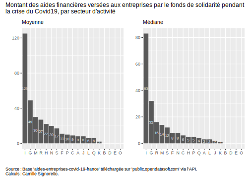p3 <- dt_aidesCovid %>% group_by(naf_section_code) %>%
mutate(moy_total_meuros = round(mean(total_meuros),0)) %>%
select(moy_total_meuros, naf_section_code) %>%
unique() %>%
ggplot() + aes(x = fct_reorder(naf_section_code, desc(moy_total_meuros)),
y = moy_total_meuros) +
geom_bar(stat="identity") +
geom_text(aes(label = moy_total_meuros), position = position_stack(vjust = 0.5),
color="gray95", size=2.8) +
labs(title = "Moyenne", x = " ", y = " ") +
theme(plot.title = element_text(size=10.5))
p4 <- dt_aidesCovid %>% group_by(naf_section_code) %>%
mutate(median_total_meuros = round(median(total_meuros),0)) %>%
select(median_total_meuros, naf_section_code) %>%
unique() %>%
ggplot() + aes(x = fct_reorder(naf_section_code, desc(median_total_meuros)),
y = median_total_meuros) +
geom_bar(stat="identity") +
geom_text(aes(label = median_total_meuros), position = position_stack(vjust = 0.5),
color="gray95", size=2.8) +
labs(title = "Médiane", x = " ", y = " ") +
theme(plot.title = element_text(size=10.5))
(p3 + p4) +
plot_annotation(title = "Montant des aides financières versées aux entreprises par le fonds de solidarité pendant \nla crise du Covid19, par secteur d'activité", caption = "Source : Base 'aides-entreprises-covid-19-france' téléchargée sur 'public.opendatasoft.com' via l'API. \nCalculs : Camille Signoretto.", theme = theme(plot.title = element_text(size = 12))) &
theme(plot.caption = element_text(hjust = 0))C’est le secteur ‘I’ pour “Hébergement et restauration” qui a capté en moyenne et en médiane le plus d’aides financières versées par le fonds de solidarité mise en place dans le cadre de la crise du Covid-19, suivi par le secteur du commerce. On retrouve ici les secteurs les plus touchés par la crise du Covid-19 puisque l’on trouve ensuite le secteur des “arts, spectables et activités récréatives” et celui des “transports et entreposage”.
Par ailleurs, on remarque que l’ordre des secteurs est assez proche lorsque l’on compare les moyennes aux médianes.

library("ggrepel")
p5 <- dt_aidesCovid %>% group_by(reg_name) %>%
mutate(moy_total_meuros = round(mean(total_meuros),0)) %>%
select(moy_total_meuros, reg_name) %>%
unique() %>%
ggplot() + aes(x = moy_total_meuros,
y = fct_reorder(reg_name, moy_total_meuros)) +
geom_point(color="burlywood4", size=2) +
geom_segment(aes(x=0, xend=moy_total_meuros,
y=fct_reorder(reg_name, moy_total_meuros),
yend=fct_reorder(reg_name, moy_total_meuros)),
color="snow4") +
geom_text_repel(aes(label = moy_total_meuros), size = 3) +
labs(title = "Moyenne", x = " ", y = " ") +
theme(plot.title = element_text(size=10),
axis.text.y = element_text(size=7.5))
p6 <- dt_aidesCovid %>% group_by(reg_name) %>%
mutate(median_total_meuros = round(median(total_meuros),0)) %>%
select(median_total_meuros, reg_name) %>%
unique() %>%
ggplot() + aes(x = median_total_meuros,
y = fct_reorder(reg_name, median_total_meuros)) +
geom_point(color="burlywood4", size=2) +
geom_segment(aes(x=0, xend=median_total_meuros,
y=fct_reorder(reg_name, median_total_meuros),
yend=fct_reorder(reg_name, median_total_meuros)),
color="snow4") +
geom_text_repel(aes(label = median_total_meuros), size = 3) +
labs(title = "Médiane", x = " ", y = " ") +
theme(plot.title = element_text(size=10),
axis.text.y = element_text(size=7.5))
(p5 + p6) +
plot_annotation(title = "Montant total des aides financières versées aux entreprises par le fonds de solidarité \npendant la crise du Covid19, par secteur d'activité",
caption = "Source : Base 'aides-entreprises-covid-19-france' téléchargée sur 'public.opendatasoft.com' via l'API. \nCalculs : Camille Signoretto.",
theme = theme(plot.title = element_text(size = 12))) &
theme(plot.caption = element_text(hjust = 0))11.2.3 Lien entre le montant moyen des aides versées et le nombre moyen d’entreprises bénéficiaires, par secteur d’activité puis par région
Construisez maintenant un graphique montrant la corrélation entre le montant moyen des aides versées aux entreprises par le fonds de solidarité pendant la crise du Covid19 et le nombre moyen d’entreprises bénéficiaires, par secteur d’activité.
De même, il faut procéder par étapes :
- créer d’abord les variables de moyenne des aides et du nombre d’entreprises ;
- ne garder que ces variables, supprimer les lignes doublons le cas échéant ;
- construisez un graphique sous forme de nuages de points, puis ajoutez-y une régression linéaire, n’oubliez pas d’indiquer les régions ;
- pour une meilleure lisibilité du graphe, on peut indiquer les codes des secteurs directement dans le graphe à côté des points, vous pouvez pour cela utiliser le très utile package
ggrepelet sa fonctiongeom_text_repel()(pratique car en cas de chevauchement un trait sur le côté est mis automatiquement), au lieu degeom_text()vue précédemment.

library("ggrepel")
dt_aidesCovid %>%
group_by(naf_section_code) %>%
mutate(moy_aides_secteur = round(mean(total_meuros),0),
moy_nbentre_secteur = round(mean(nombre_entreprises),0)) %>%
select(moy_aides_secteur, moy_nbentre_secteur, naf_section_code) %>%
unique() %>%
ggplot() + aes(x = moy_aides_secteur, y = moy_nbentre_secteur) +
geom_point(aes(color=fct_reorder(naf_section_code, desc(moy_aides_secteur))),
size=2) +
geom_smooth(method = "lm", formula = y ~ x, color="gray55", size=0.9) +
geom_text_repel(aes(label = naf_section_code),size = 2.9) +
scale_y_continuous(limits=c(0,3500), breaks=seq(0, 3500,200)) +
scale_x_continuous(limits=c(0,125), breaks = seq(0, 125, 10)) +
labs(title = "Corrélation entre le montant moyen des aides versées aux entreprises par le fonds de \nsolidarité pendant la crise du Covid19 et le nombre moyen d'entreprises bénéficiaires, \npar secteur d'activité",
x = "Montant moyen des aides versées (en millions d'euros)",
y = "Nombre moyen d'entreprises",
color = " ",
caption = "Source : Base 'aides-entreprises-covid-19-france' téléchargée sur 'public.opendatasoft.com' via l'API. \nCalculs : Camille Signoretto.") +
theme(plot.caption = element_text(hjust = 0),
plot.title = element_text(size=12),
legend.position="none",
axis.title.x = element_text(size=9),
axis.title.y = element_text(size=9)) Voici le même grahique par région, en laissant cette fois la légende sur le côté : 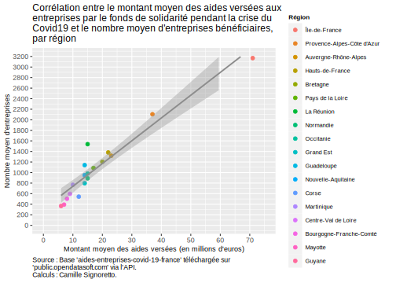
dt_aidesCovid %>%
group_by(reg_name) %>%
mutate(moy_aides_region = round(mean(total_meuros),0),
moy_nbentre_region = round(mean(nombre_entreprises),0)) %>%
select(moy_aides_region, moy_nbentre_region, reg_name) %>%
unique() %>%
ggplot() + aes(x = moy_aides_region, y = moy_nbentre_region) +
geom_point(aes(color=fct_reorder(reg_name, desc(moy_aides_region))),
size=2) +
geom_smooth(method = "lm", formula = y ~ x, color="gray55", size=0.9) +
scale_y_continuous(limits=c(0,3200), breaks=seq(0, 3200,200)) +
scale_x_continuous(limits=c(0,75), breaks = seq(0, 75, 10)) +
labs(title = "Corrélation entre le montant moyen des aides versées aux \nentreprises par le fonds de solidarité pendant la crise du \nCovid19 et le nombre moyen d'entreprises bénéficiaires, \npar région",
x = "Montant moyen des aides versées (en millions d'euros)",
y = "Nombre moyen d'entreprises",
color = "Région",
caption = "Source : Base 'aides-entreprises-covid-19-france' téléchargée sur \n'public.opendatasoft.com' via l'API. \nCalculs : Camille Signoretto.") +
theme(plot.caption = element_text(hjust = 0),
plot.title = element_text(size=12),
legend.title = element_text(size=8, face="bold"),
legend.text = element_text(size=7.5),
axis.title.x = element_text(size=9),
axis.title.y = element_text(size=9)) Cela confirme qu’il faut créer un indicateur pour être plus pertinent dans la manipulation de cette base et dans les résultats que l’on souhaite mettre en avant. En effet, ces deux derniers graphiques montrant une corrélation nette entre le montant moyen des aides versées et le nombre moyen d’entreprises dans une région (c’est-à-dire plus il y a d’entreprises dans une région, plus le montant moyen sera important), on pourrait construire un indicateur rapportant le montant total des aides versées au nombre d’entreprises de la région, pour en faire un montant moyen par entreprise pour chaque région.
11.2.4 Montant moyen des aides versées par entreprise dans chaque région ou chaque secteur d’activité
Construisez donc de nouveau un graphique en bâtons, mais avec cette fois la valeur de cet indicateur (rapport de la somme totale des aides par le nombre total d’entreprises) par région : 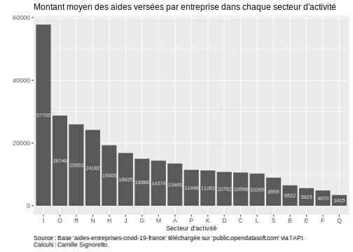
dt_aidesCovid %>% group_by(reg_name) %>%
mutate(total_region = sum(total),
nombre_entreprises_region = sum(nombre_entreprises),
aides_par_entre = round(total_region / nombre_entreprises_region, 0)) %>%
select(aides_par_entre, reg_name) %>%
unique() %>%
ggplot() + aes(x = fct_reorder(reg_name, desc(aides_par_entre)),
y = aides_par_entre) +
geom_bar(stat="identity") +
geom_text(aes(label = aides_par_entre), position = position_stack(vjust = 0.5),
color="gray95", size=2.6) +
labs(title = "Montant moyen des aides versées par entreprise dans chaque région",
x = " ", y= " ",
caption = "Source : Base 'aides-entreprises-covid-19-france' téléchargée sur 'public.opendatasoft.com' via l'API. \nCalculs : Camille Signoretto.") +
theme(plot.caption = element_text(hjust = 0),
plot.title = element_text(size=12),
axis.text.x = element_text(angle=45, size=8, hjust=1))On se rend alors compte que c’est la Corse qui arrive en tête : en moyenne, chaque entreprise a obtenu 22 419 euros d’aides financières par le fonds de solidarité ; on retrouve ensuite l’Île-de-France avec en moyenne 22 281 euros par entreprise.
Voici le même graphique par secteur d’activité :

dt_aidesCovid %>% group_by(naf_section_code) %>%
mutate(total_region = sum(total),
nombre_entreprises_region = sum(nombre_entreprises),
aides_par_entre = round(total_region / nombre_entreprises_region, 0)) %>%
select(aides_par_entre, naf_section_code) %>%
unique() %>%
ggplot() + aes(x = fct_reorder(naf_section_code, desc(aides_par_entre)),
y = aides_par_entre) +
geom_bar(stat="identity") +
geom_text(aes(label = aides_par_entre), position = position_stack(vjust = 0.5),
color="gray95", size=2.6) +
labs(title = "Montant moyen des aides versées par entreprise dans chaque secteur d'activité",
x = "Secteur d'activité", y= " ",
caption = "Source : Base 'aides-entreprises-covid-19-france' téléchargée sur 'public.opendatasoft.com' via l'API. \nCalculs : Camille Signoretto.") +
theme(plot.caption = element_text(hjust = 0),
plot.title = element_text(size=12),
axis.title.x = element_text(size=9))Ici, c’est de nouveau le secteur de l’hébergement-restauration qui apparaît premier : en moyenne, chaque entreprise de ce secteur a reçu 57 755 euros d’aides financières. En revanche, le second secteur dont les entreprises ont reçu en moyenne le plus d’aides financières est celui de l’administration publique (‘O’).
11.2.5 Top 5 des aides financières versées selon la région ou le secteur d’activité
En vue de l’application sur Shiny, construisez un graphique en bâtons indiquant les seules 5 premières régions totalisant le plus d’aides financières en millions d’euros.
dt_aidesCovid %>%
group_by(reg_name) %>%
summarise(montant_total = round(sum(total_meuros))) %>%
arrange(desc(montant_total)) %>% slice(1:5) %>%
ggplot() + aes(x = montant_total, y = fct_reorder(reg_name, montant_total), fill=reg_name) +
geom_bar(stat="identity") +
geom_text(aes(label=montant_total), position = position_stack(vjust=0.5), size=3.5) +
labs(title="Top 5 des aides financières versées par le fond de solidarité, \nréparties par région",
x = "Montant total en millions d'euros", y = " ") +
scale_fill_brewer(palette="Set2") +
theme_classic() +
theme(legend.position = "none", plot.title=element_text(size=13),
axis.text.y = element_text(size=10),
axis.text.x = element_text(size=10),
axis.title.x = element_text(size=11))
11.2.6 À vous de “jouer” !
Bien sûr, vous pouvez créer des fonctions sur ces graphiques ; puis “jouez” avec d’autres variables, notamment les départements (“dep_name”) et le nombre d’aides (“financial_support_count”) ; ou encore construire des cartes sur le niveau département (même s’il n’est pas très fin) ; utiliser d’autres types de graphiques ; etc. ; etc.